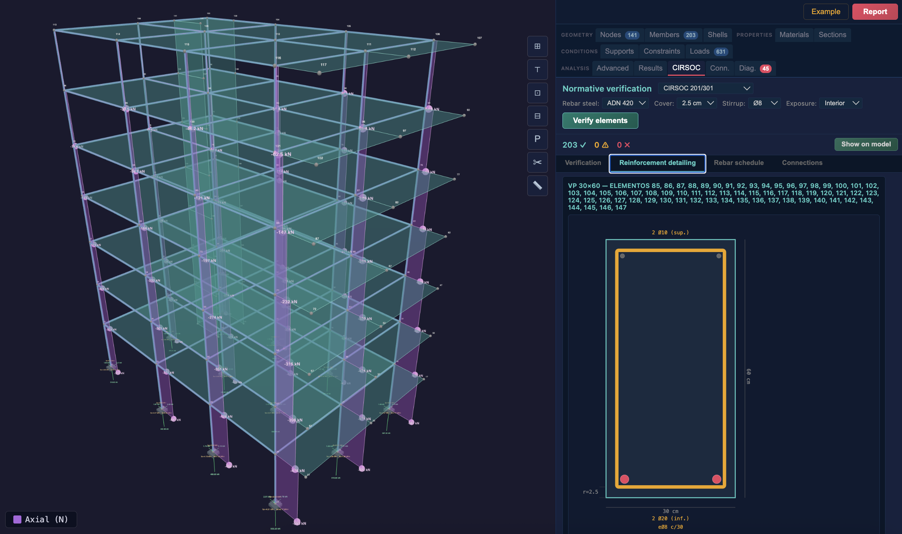
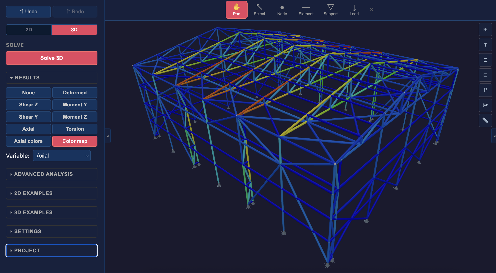
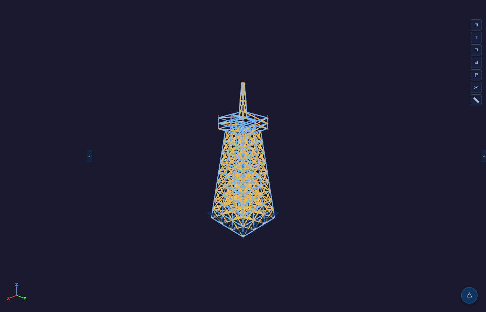

La misma plataforma está siendo concebida para incorporar módulos específicos para sectores estratégicos.
Plataformas offshore, pipe racks, proceso
Torres eólicas, solar, represas
Tolvas, silos, industriales pesadas
Proof of concept: plataforma offshore tipo jacket — 12 patas perimetrales, X-bracing, 8 conductores, 3 niveles topsides, derrick. 196 nodos · 762 elementos.

Solver propio, verificación por norma, solver WASM en browser, reportes profesionales, 1900+ tests.
Ingeniero civil, vicedecano de FIUBA y director del CEARE — entiende las necesidades energéticas del país.
Software funcionando en stabileo.com. Modo PRO con edificios, puentes, naves, estadios y plataformas offshore.